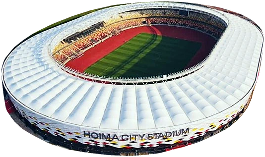
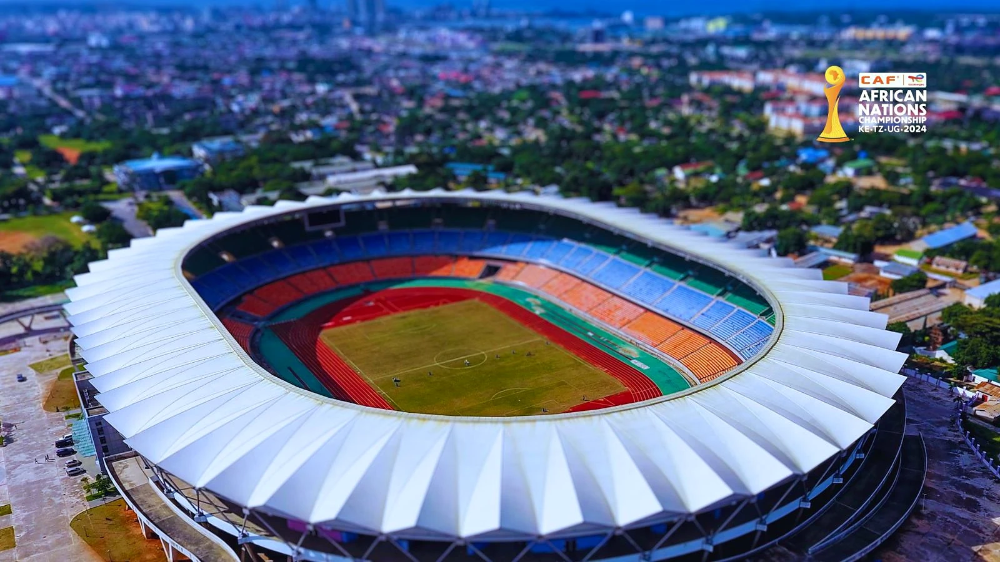
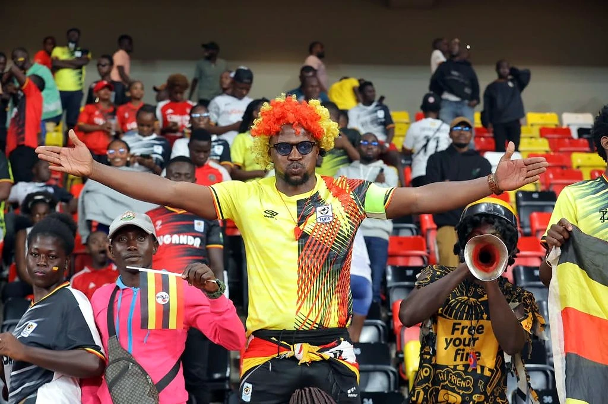

HOIMA · UGANDA
Hoima City Stadium
Start with Hoima’s stadium atmosphere, then shape your accommodation, road transfers and days beyond the match.
Plan around HoimaTHE AFCON 2027 TRAVEL GUIDE
Football brings us together. Uganda, Kenya and Tanzania give you every reason to stay a little longer.
19 June – 17 July 2027
Plan my football trip
THE STADIUMS. THE ATMOSPHERE. THE PEOPLE.
HOIMA · UGANDA
Start with Hoima’s stadium atmosphere, then shape your accommodation, road transfers and days beyond the match.
Plan around Hoima
DAR ES SALAAM · TANZANIA
Explore Dar es Salaam as a football travel base and leave time for Tanzania’s city life and safari possibilities.
Plan around Dar es SalaamVenue photographs show existing stadiums and past events. Confirm 2027 match allocations, access and tickets through CAF before finalising travel.
THE STARTING POINT
CAF has announced 19 June 2027 for the opening match and 17 July 2027 for the final, with Kenya, Tanzania and Uganda co-hosting the tournament.
Build your travel around the latest official fixtures, then add the days you want for city exploring, a safari, or a quieter stay.
Read CAF’s official dates announcementTournament dates checked against CAF · 20 November 2026
CHOOSE A BASE
Start with Uganda, Kenya or Tanzania. Shape your accommodation and transfers around confirmed match plans.
Explore host countriesMAKE THE CONNECTIONS
Consider arrival transfers, travel between stops and a comfortable gap between your safari and match day.
Stays & transport ideasMATCH TICKETS
This site plans travel ideas. Match tickets and tournament updates are handled separately through official channels.
Visit CAF’s tournament hub
THE PEOPLE MAKE THE MATCHDAY
A stadium is more than a seat and a pitch. It is the supporters, the colours and the journey you make together.
Plan with your fan groupBEFORE YOU GO
Use this simple checklist as a starting point. Your choices stay in this browser.
LET THE NEXT CHAPTER BE AFRICA
Come with a plan, or just the beginnings of one. There’s a trail for that.
Start planningImages are photographs, with conventional colour, contrast, sharpness and web-size adjustments only. No scene, stadium, crowd, person or animal has been generated or reconstructed.
The isolated stadium, supporter and giraffe images are cut from the Hoima and Maasai Mara photographs credited below. The giraffe cutout is adapted from Nina R’s photograph under CC BY 2.0.
Homepage wildlife films
Lioness walking on the road by Leif Blessing and Majestic Lion Strolling in African Savanna by Bharath Kumar Venkatesh, via Pexels.
Lion in morning light, Maasai Mara
Catherine Merlin · Source photograph · Unsplash License. Conventional auto-contrast (0.1% cutoff), contrast +2.5%, colour +2.5%, mild unsharp mask and web resizing. No generative processing or reconstructed detail.
Hoima City Stadium, Uganda
Client-supplied reference · Photograph supplied by the client · Supplied for this project. Conventional auto-contrast (0.1% cutoff), contrast +2.5%, colour +2.5%, mild unsharp mask and web resizing. No generative processing or reconstructed detail.
Uganda supporters at Hoima City Stadium
Uganda AFCON Local Organising Committee; photographer not named on source page · Source photograph · Original source rights retained; no open-licence claim. Conventional auto-contrast (0.1% cutoff), contrast +2.5%, colour +2.5%, mild unsharp mask and web resizing. No generative processing or reconstructed detail.
Benjamin Mkapa Stadium, Tanzania
CAF · Source photograph · Original source rights retained; no open-licence claim. Conventional auto-contrast (0.1% cutoff), contrast +2.5%, colour +2.5%, mild unsharp mask and web resizing. No generative processing or reconstructed detail.
Mountain gorilla in Bwindi, Uganda
Giles Laurent · Source photograph · CC BY-SA 4.0. Conventional auto-contrast (0.1% cutoff), contrast +2.5%, colour +2.5%, mild unsharp mask and web resizing. No generative processing or reconstructed detail.
Giraffe family, Maasai Mara, Kenya
Nina R / Ninara31 · Source photograph · CC BY 2.0. Conventional auto-contrast (0.1% cutoff), contrast +2.5%, colour +2.5%, mild unsharp mask and web resizing. No generative processing or reconstructed detail.
Zebras at sunrise in the Serengeti
Maximilian Staub · Source photograph · CC BY 4.0. Conventional auto-contrast (0.1% cutoff), contrast +2.5%, colour +2.5%, mild unsharp mask and web resizing. No generative processing or reconstructed detail.
Tent interior, One Nature Nyaruswiga
Up9108226 · Source photograph · CC BY-SA 4.0. Conventional auto-contrast (0.1% cutoff), contrast +2.5%, colour +2.5%, mild unsharp mask and web resizing. No generative processing or reconstructed detail.
Property and stadium images provide travel context. They do not imply a partnership, a confirmed reservation, match allocation or ticket access.